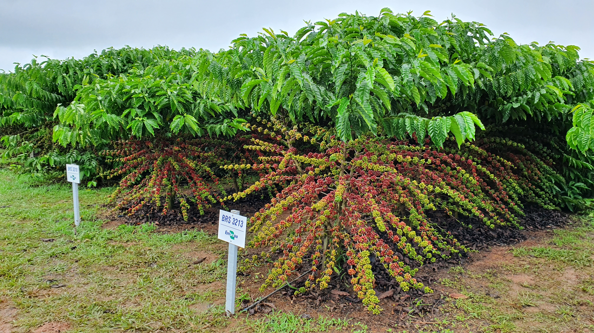
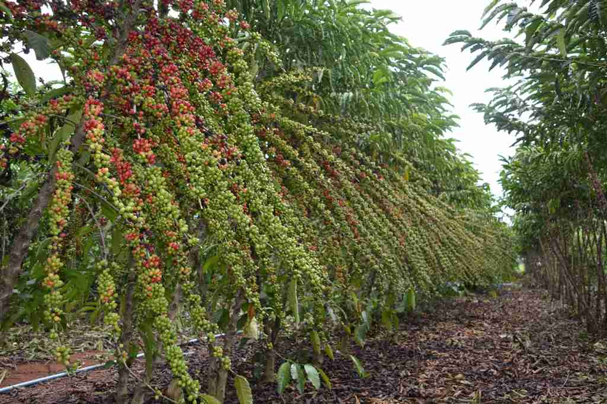

tipos de café

café robusto
A variedade Robusta possui um aspecto rústico e de sabor acentuado, com grande resistência às doenças e tempo de maturação maior que a Arábica.
Representando apenas um quarto da produção mundial de café, a Robusta é mais comum de ser encontrada em forma de cafés liofilizados e de blends.

café canion
A planta do café Conilon possui folhas enrugadas e grãos menores e arredondados. No paladar, essa variedade apresenta um amargor bastante presente e marcante, decorrente de grande quantidade de cafeína (cerca de 2,2%) e de baixa presença de açúcar (de 3% a 7%).